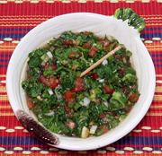

|
Aji Picante #1Colombia - Aji Picante, Aji Piqué | ||||
| Makes: Effort: Sched: DoAhead: |
1-3/4 cups ** 45 min Best |
A superb salsa. Colombian recipes feature little chili heat, but this salsa is a "must have" at the table. It is unthinkable to serve empanadas without it. See also Comments. | |||
|
------- 1 3 6 1/2 1/4 ------- 1-1/2 1-1/2 1/4 2 1/2 1/4 ------- |
---- lrg oz c c ---- T T c T t t ---- |
-- Vegies Chili Habanero (1) Scallions Tomatoes Cilantro Parsley, flat -- Dressing Lime Juice Olive Oil, ExtV Vinegar, white Water Salt Pepper, black ----------- |
Make - (45 min - all hand cut)
|